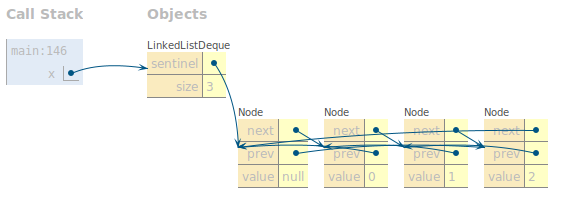

- Introduction
- Getting the Skeleton Files
- The Deque API
- Project Tasks
- Frequently Asked Questions
- Testing
- Deliverables
- Tips
This project is in two parts. Part 1A will be due 09/14, and Part 1B will be due 09/18.
Rather than simulating the glorious gravitational physics of our universe, we’ll instead be building data structures. Not the most glamorous thing, but this will provide you with plenty of opportunities to practice everything we’ve been doing in lecture before our midterm rolls around.
Introduction
In project 1A, we will build implementations of a “Double Ended Queue” using both lists and arrays. In project 1B, we will learn how to write our own tests for those data structures, and will use the Double Ended Queue to solve some small real world probelms.
In this part of the project you will create two Java files:
LinkedListDeque.java and ArrayDeque.java, with public methods listed
below.
Unlike Project 0, we will provide relatively little scaffolding. In other words, we’ll say what you should do, but not how.
For this project, you must work alone! Please carefully read the Policy on Collaboration and Cheating to see what this means exactly.
We strongly encourage you to switch to IntelliJ for this project. While it’s not absolutely required, you will have a better time. The ability to visually debug your code can be incredibly useful, it’s also nice to have a development environment that catches syntax errors as you are typing, and it avoids the need to type javac and java (or pressing arrow keys) a bajillion times. If you need a refresher on how to import a project, you can follow the Intellij setup guide
Additionally, we will be enforcing style. You must follow the style guide or you will lose points on the autograder.
Getting the Skeleton Files
As with Project 0, you should start by downloading the skeleton files.
To do this, head to the folder containing your copy of your repository. For example, if your login is ‘s101’, then head to the ‘fa20-s101’ folder (or any subdirectory).
To make sure you have the latest copy of the skeleton files, use
git pull skeleton master. If you’re using a newer version of git, you
might need to run
git pull skeleton master -allow-unrelated-histories.
You should now see a proj1a directory appear with files that match the skeleton repository.
If you get some sort of error, STOP and either figure it out by carefully
reading the git guide or seek help at OH or Ed. You’ll potentially save
yourself a lot of trouble vs. guess-and-check with git commands. If you find
yourself trying to use commands recommended by Google like
force push,
don’t. Don’t
use force push, even if a post you found on Stack Overflow says to do it!
The only provided file in the skeleton is LinkedListDequeTest.java. This file
provides examples of how you might write tests to verify the correctness of
your code. We strongly encourage you try out the given tests, as well as to
write at least one of your own.
You may find writing tests quite annoying. However, in part B of this project, we will use a library called JUnit, which will make writing tests much easier and organized. We will talk more about testing in a later section.
The Deque API
The double ended queue is very similar to the SLList and AList classes that we’ve discussed in class. Here is a definition from cplusplus.com.
Deque (usually pronounced like “deck”) is an irregular acronym of double-ended queue. Double-ended queues are sequence containers with dynamic sizes that can be expanded or contracted on both ends (either its front or its back).
Specifically, any deque implementation must have exactly the following operations:
public void addFirst(T item): Adds an item of typeTto the front of the deque.public void addLast(T item): Adds an item of typeTto the back of the deque.public boolean isEmpty(): Returns true if deque is empty, false otherwise.public int size(): Returns the number of items in the deque.public void printDeque(): Prints the items in the deque from first to last, separated by a space. Once all the items have been printed, print out a new line.public T removeFirst(): Removes and returns the item at the front of the deque. If no such item exists, returns null.public T removeLast(): Removes and returns the item at the back of the deque. If no such item exists, returns null.public T get(int index): Gets the item at the given index, where 0 is the front, 1 is the next item, and so forth. If no such item exists, returns null. Must not alter the deque!
Your class should accept any generic type (not just integers). For information on creating and using generic data structures, see lecture 5. Make sure to pay close attention to the rules of thumb on the last slide about generics.
In this project, you will provide two implementations for the Deque interface: one powered by a Linked List, and one by a resizing array.
Project Tasks
1. Linked List Deque
Note: We covered everything needed in lecture to do this part in Lectures 4 and 5 (9/2 and 9/4).
Create a file called LinkedListDeque.java in your proj1a directory.
As your first deque implementation, you’ll build the LinkedListDeque class,
which will be linked list based.
Your operations are subject to the following rules:
addandremoveoperations must not involve any looping or recursion. A single such operation must take “constant time”, i.e. execution time should not depend on the size of the deque. This means that you cannot use loops that go over all/most elements of the deque.getmust use iteration, not recursion.sizemust take constant time.- Do not maintain references to items that are no longer in the deque. The amount of memory that your program uses at any given time must be proportional to the number of items. For example, if you add 10,000 items to the deque, and then remove 9,999 items, the resulting memory usage should amount to a deque with 1 item, and not 10,000.
Implement all the methods listed above in “The Deque API” section.
In addition, you also need to implement:
public LinkedListDeque(): Creates an empty linked list deque.public T getRecursive(int index): Same as get, but uses recursion.
You may add any private helper classes or methods in LinkedListDeque.java if
you deem it necessary.
While this may sound simple, there are many design issues to consider, and you
may find the implementation more challenging than you’d expect. Make sure to
consult the lecture on doubly linked lists, particularly the slides on sentinel
nodes: two sentinel
topology,
and circular sentinel
topology.
I prefer the circular approach. You are not allowed to use Java’s built in
LinkedList data structure (or any data structure from java.util.*) in your
implementation.
2. Array Deque
Note: We’ll have covered everything needed in lecture to do this part by lecture 6 (9/7).
Create a file called ArrayDeque.java in your proj1a directory.
As your second deque implementation, you’ll build the ArrayDeque class. This
deque must use arrays as the core data structure.
For this implementation, your operations are subject to the following rules:
addandremovemust take constant time, except during resizing operations.getandsizemust take constant time.- The starting size of your array should be 8.
- The amount of memory that your program uses at any given time must be proportional to the number of items. For example, if you add 10,000 items to the deque, and then remove 9,999 items, you shouldn’t still be using an array of length 10,000ish. For arrays of length 16 or more, your usage factor should always be at least 25%. This means that before performing a remove operation that will bring the number of elements in the array under 25% the length of the array, you should resize the size of the array down. For smaller arrays, your usage factor can be arbitrarily low.
Implement all the methods listed above in “The Deque API” section.
In addition, you also need to implement:
public ArrayDeque(): Creates an empty array deque.
You may add any private helper classes or methods in ArrayDeque.java if you
deem it necessary.
You will need to somehow keep track of what array indices hold the Deque’s front and back elements. We strongly recommend that you treat your array as circular for this
exercise. In other words, if your front item is at position zero, and you
addFirst, the new front should loop back around to the end of the array
(so the new front item in the deque will be the last item in the underlying
array). This will result in far fewer headaches than non-circular approaches.
See the project 1 demo
slides
for more details.
Correctly resizing your array is very tricky, and will require some deep thought. Try drawing out various approaches by hand. It may take you quite some time to come up with the right approach, and we encourage you to debate the big ideas with your fellow students or TAs. Make sure that your actual implementation is by you alone.
Frequently Asked Questions
Q: How should I print the items in my deque when I don’t know their type?
A: It’s fine to use the default String that will be printed (this string comes
from an Object’s implementation of toString(), which we’ll talk more about
later this semester). For example, if you called the generic type in your
class Jumanji, to print Jumanji j, you can call System.out.print(j).
Q: I can’t get Java to create an array of generic objects!
A: Use the strange syntax we saw in lecture,
i.e. T[] a = (T[]) new Object[1000];. Here, T is a generic type, it’s a placeholder for other
Object types like “String” or “Integer”.
Q: I tried that but I’m getting a compiler warning?
A: Sorry, this is something the designers of Java messed up when they introduced generics into Java. There’s no nice way around it. Enjoy your compiler warning. We’ll talk more about this in a few weeks.
Q: How do I make my arrows point to particular fields of a data structure?
In your diagram from lecture it looked like the arrows were able to point to the middle of an array or at specific fields of a node.
A: Any time I drew an arrow in class that pointed at an object, the pointer was to the ENTIRE object, not a particular field of an object. In fact it is impossible for a reference to point to the fields of an object in Java.
Testing
Testing is an important part of code writing in industry and academia. It is an essential skill that can prevent monetary loss and hazardous bugs in industry, or in your case, losing points. Learning how to write good, comprehensive unit tests, and developing a good habit of always testing code before shipping are some core objectives of CS 61B.
We will focus more on testing in the next part of this project, project 1B. For
now, we have provided you a very simple sanity check,
LinkedListDequeTest.java. To use the sample testing file, you must uncomment
the lines in the sample tests. Only uncomment a test once you have implemented
all of the methods used by that test (otherwise it won’t compile). Execute the
main method to run the tests. When testing your project, remember you can use
the visualizer from inside IntelliJ!
You will not submit LinkedListDequeTest.java. It is for your benefit to write
more comprehensive tests for both LinkedListDeque and ArrayDeque before
submitting. Note, passing the given tests in LinkedListDequeTest.java does
not necessarily mean that you will pass all of the autograder tests or
receive full credit.
Deliverables
LinkedListDeque.javaArrayDeque.java
Tips
-
Check out the project 1 slides for some additional visually oriented tips.
-
If you’re stuck and don’t even know where to start: One great first step is implementing
SLListand/orAList. For maximum efficiency, work with a friend or two or three. -
Take things a little at a time. Writing tons of code all at once is going to lead to misery and only misery. If you wrote too much stuff and feel overwhelmed, comment out whatever is unnecessary.
-
If your first try goes badly, don’t be afraid to scrap your code and start over. The amount of code for each class isn’t actually that much (my solution is about 130 lines for each .java file, including all comments and whitespace).
-
For
ArrayDeque, consider not doing resizing at all until you know your code works without it. Resizing is a performance optimization (and is required for full credit). -
Work out what your data structures will look like on paper before you try implementing them in code! If you can find a willing friend, have them give commands, while you attempt to draw everything out. Try to come up with operations that might reveal problems with your implementation.
-
Make sure you think carefully about what happens if the data structure goes from empty, to some non-zero size (e.g. 4 items) back down to zero again, and then back to some non-zero size. This is a common oversight.
-
Sentinel nodes make life much easier, once you understand them.
-
Circular data structures may take a little while to understand, but make life much easier for both implementations (but especially the
ArrayDeque). -
Consider a helper function to do little tasks like compute array indices. For example, in my implementation of
ArrayDeque, I wrote a function calledint minusOne(int index)that computed the index immediately “before” a given index. -
Consider using the Java Visualizer (which you installed in lab2setup) to visualize your Deque as you step through with the debugger. The visualizer is an icon of a blue coffee cup with an eye, and is the tab next to the “Console” tab in the debugger panel). See the CS 61B plugin guide if you can’t figure out how to get the visualizer to show. The visualizer will look something like this: 